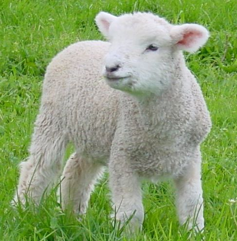
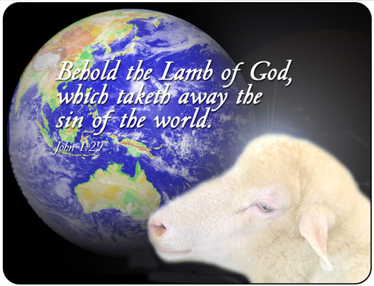

Pascha [Pesach]
Święto Paschy (hebr. פסח - Pesach, 'przejście') przypada 14 Nissan kalendarza żydowskiego (marzec/kwiecień) po zachodzie słońca. Jest ono ściśle związane z następującym bezpośrednio po nim 7-dniowym Świętem Przaśników i traktowane jako całość. Od czasu, kiedy zbudowano Świątynię w Jeruzalem, Pascha stala sie jednym z tzw. świąt pielgrzymich (hebr. szalosz regalim) (5 Mojż. 16:16, 2 Mojż. 23:14-17, 34:23).
Świeto Pesach upamiętnia noc kiedy Izraelici upuścili Egipt, miejsce swojej niewoli. W ostatni wieczór, przed wyjściem z ‘Eretz Mitzraim’ (ziemia egipska w języku hebrajskim), zgodnie z nakazem Bożym mieli oni spożyć wieczerzę, której najważniejszym daniem był baranek (2 Mojż 12:3-11). Krwią zabitego na ten cel baranka, każdy Izraelita miał oznaczyć drzwi swojego domostwa.
Bardzo ważne było, aby nie zaniechać żadnego ze szczegółów związanych w wyborem tego baranka. Między innymi, miał to być baranek absolutnie bez żadnej skazy, a na sprawdzenie tego były aż 4 dni (2 Mojż. 12:3-6).

Ponadto Bóg ściśle wyznaczył sposób jego przyrządzenia, a nawet spożycia (2 Mojż. 12:8-11). Dlaczego było to takie ważne? W wymiarze ówczesnych wydarzeń, chodziło o ocalenie życia pierworodnych, ponadto podkreślało wagę odzyskania wolności. To wystarczyło, aby każdy Izraelita z bojaźnią dostosował się do tych wszystkich szczegółowych przepisów, łącznie z zaznaczeniem krwią swoich odrzwi.
„A krew ta będzie dla was znakiem na domach, gdzie będziecie. Gdy ujrzę krew, ominę was, i nie dotknie was zgubna plaga, gdy uderzę ziemię egipską. Dzień ten będzie wam dniem pamiętnym i będziecie go obchodzili jako święto Pana; będziecie go obchodzili przez wszystkie pokolenia jako ustanowienie wieczne.” (2 Mojż. 12:13-14, BW)
Dziś wiemy, że każdy szczegół ówczesnej Paschy wybiegał w daleką przyszłość, gdyż Baranek paschalny obrazował Zbawiciela – Baranka Bożego (Jana 1:29). Stąd bezwzględne zalecenia: aby baranek był bez skazy (2 Mojż. 12:5, por. Hebr. 9:14), aby nie łamano żadnej jego kości (2 Mojż. 12:46, por. Jana 19:36), aby jego krwią oznaczyć drzwi swojego domostwa na znak wiary, iż ta krew ocala życie (2 Mojż. 12:22-23, por. Rzym. 5:9).
Istnieje jeszcze szereg innych proroczych obrazów wskazujących na Zbawiciela. Przed Świętem Paschy należało usunąć z domostw wszelki zakwas (2 Mojż. 12:15,19 13:7).
Zakwas symbolizuje grzech, obłudę, złość i przewrotność (Łuk. 12:1, 1 Kor. 5:7-8, Gal. 5:9). Chleb pozbawiony zakwasu (upieczony z ciasta zarobionego wyłącznie z wody i mąki, bez drożdży) - maca, spożywany w Święto Paschy oraz pozostałe 7 dni Święta Przaśników, miał symbolizować bezgrzeszne ciało Chrystusa (ale nie tylko – o czym szerzej w rozdziale o Święcie Przaśników).
W czasie uroczyście obchodzonej w tym dniu wieczerzy (tzw. wieczerza sederowa) pije się cztery kielichy wina, które symbolizują wolność i szczęście. Każdy kielich ma swoją nazwę i oznacza cztery obietnice Boże:

„Wyprowadzę (hoceti) was spod ciężaru robót w Egipcie
Wyratuję (hicalti) was z niewoli
Wybawię (gaalti) was okazując wielką moc i wielkie wyroki
Wezmę (lakachti) was dla siebie jako naród, będę dla was Bogiem.” (2 Mojż. 6:6-8, por. BG i BT)
Znając porządek wieczerzy sederowej, można wywnioskować, iż Jezus wypowiedział słowa zapisane w Ewangeliach (Mat. 26:26-29, Łuk. 22:15-20) właśnie przy trzecim kielichu, "kielichu zbawienia".
To doroczne święto, upamiętniające wyjście z Egiptu i ocalenie pierworodnych wskazuje na doniosłe wydarzenia z udziałem Mesjasza – Baranka Bożego, a ostatecznie wskazuje na zbawienie.
Jak to możliwe, że Żydzi, skrupulatnie wypełniając, do dnia dzisiejszego, te prorocze zapowiedzi ukryte w ceremonii tego święta, jeszcze nie zdali sobie sprawy z ich głębi? Są podstawy, aby sądzić iż wkrótce to nastąpi.
Zwróćmy uwagę na jeden z istotnych szczegółów.
Pesach jest nazywane dniem ocalenia pierworodnych, ponieważ baranek paschalny był ofiarą wykupu za ocalonych pierworodnych.
„I powiesz do faraona: Tak mówi Pan: Moim synem pierworodnym jest Izrael. Mówię do ciebie: Wypuść syna mojego, aby mi służył. Jeśli będziesz się wzbraniał od wypuszczenia go, Ja zabiję twego syna pierworodnego.” (2 Mojż. 4:22-23,*BW)
Zatem w szerszym kontekście Baranek Boży okazał się wykupem za życie Jego pierworodnego – Izraela.
Dlatego Apostoł Jan napisał:
„On ci jest ubłaganiem za grzechy nasze, a nie tylko za nasze, lecz i za grzechy całego świata.” (1 Jana 2:2, BW, por. Rzym. 1:16)
Biblia często mówi o pierworodnych oraz o pierwocinach plonów, które zawsze miały być poświęcone Bogu (2 Mojż. 13:2, 34:19). Oczywiście przede wszystkim, ma to znaczenie w odniesieniu do Jezusa, jako pierworodnego Syna Bożego (Kol. 1:15), pierworodnego z umarłych (Obj. 1:5), ale w dalszym kontekście odnosi się do Izraela (por. Oz. 11:1):
Co oznacza Egipt?
Egipt to po hebrajsku ‘Micraim’ (rdzeń tego słowa: ‘mecar’ znaczy: uciskać, dusić, zwężać). Egipt jest symbolem ucisku i zniewolenia.
Czy słowa „Jam jest Pan, Bóg twój, który cię wyprowadził z ziemi egipskiej, z domu niewoli.” (2 Mojż. 20:2, BW), rzeczywiście wypełniły się na Żydach, jako obietnica wolności i wyzwolenia z jarzma obcego narodu? Czy w zamierzeniu Bożym miejsce faraona mieli zająć inni ciemiężyciele?
Wiele wydarzeń w Biblii jest proroczą zapowiedzią czegoś, co wypełnia się potem na większą skalę. Tak też będzie i w tym przypadku. Wyjście z Egiptu i wejście do ziemi obiecanej było częściowym spełnieniem się tych zapowiedzi. Pismo Święte obiecuje Żydom całkowite wyzwolenie od nieprzyjaciół i bezpieczną przyszłość na wieki (Am. 9:15, Izaj. 35:10). Zainteresowanych szczegółami zachęcam do przeczytania opracowania pt. „Izrael – duchowy czy cielesny?” (rozdz. 18), zamieszczonego na tej witrynie.
Skoro Żydzi czekają jeszcze na osiągnięcie pełni swojego wyzwolenia - i dlatego obchodzą to święto, to czy można powiedzieć, że proroczy obraz Święta Paschy wypełnił się dla chrześcijan (Hebr. 10:10-12)? Czy jesteśmy już: ‘wyprowadzeni, wyratowani, wybawieni i wzięci’?
„Mimo że wiecie już raz na zawsze wszystko, to jednak pragnąłbym wam przypomnieć, że Pan, który wyprowadził naród [izraelski] z niewoli egipskiej, wytracił jednak później tych wszystkich, którzy nie wierzyli.” (Judy 3:5, BW-P)
Tak więc, wyprowadzenie z niewoli egipskiej nie oznaczało jeszcze wejścia do obiecanej ziemi. Paradoks? Przecież wszyscy Izraelici opuszczając Egipt mieli przed sobą cel - otrzymać tę ziemię. Inaczej, nie ruszaliby się z miejsca. A jednak, ze wszystkich 600 tysięcy mężczyzn oraz setek tysiecy kobiet, weszły tam tylko dwie osoby: Jozue i Kaleb! Pozostali - to nowe pokolenie, dzieci tych, którzy z powodu niewiary pomarli na pustyni.
Rozważmy głęboko ten przykład, który Juda napisał dla naszego pouczenia (Rzym. 15:4). Obyśmy wyprowadzeni z niewoli grzechu, ku zbawnieniu - naszej ziemi obiecanej - również nie pomarli z powodu niewiary, zanim dokona się pełnia naszego zbawienia i ziści się sens czwartego kielicha "wzięci".
Z uwagi na fakt, iż nam poganom została odsłonięta Ewangelia - a jeszcze nie wszystkim Żydom - może nam się tylko wydawać, że wyprzedzamy ich pod jakimś względem. Niestety tak nie jest. My możemy jedynie uznać, że zostaliśmy wyprowadzeni z niewoli tego świata - tylko w wymiarze duchowym - podczas gdy Żydzi już po raz drugi w sensie fizycznym wchodzą do swojej ziemi obiecanej (patrz opracowanie „Izrael – fizyczny czy duchowy", rozdz. 9). Nie weszliśmy jeszcze do odpocznienia Bożego - tak jak i Żydzi. Zatem ani oni, ani my nie żyjemy jeszcze w Królestwie Bożym:
„Wiemy bowiem, że całe stworzenie wespół wzdycha i wespół boleje aż dotąd. A nie tylko ono, lecz i my sami, którzy posiadamy zaczątek Ducha, wzdychamy w sobie, oczekując synostwa, odkupienia ciała naszego.” (Rzym. 8:22-23, BW)
„A tak pozostaje jeszcze odpocznienie dla ludu Bożego; kto bowiem wszedł do odpocznienia jego, ten sam odpoczął od dzieł swoich, jak Bóg od swoich. Starajmy się tedy usilnie wejść do owego odpocznienia, aby nikt nie upadł, idąc za tym przykładem nieposłuszeństwa.” (Hebr. 4:9-11, BW)
I chociaż ofiara Jezusa Chrystusa w pełni zaspokaja możliwość naszego zbawienia, jednak ciągle jest to potencjalna możliwość. Zważmy na słowa:
„A kto wytrwa do końca, ten będzie zbawiony.” (Mat. 24:13, BW)
Nawet Apostoł Paweł napisał:
„ale umartwiam ciało moje i ujarzmiam, bym przypadkiem, będąc zwiastunem dla innych, sam nie był odrzucony.” (1 Kor. 9:27, BW). Czy uważamy się za kogoś lepszego albo duchowo mocniejszego od niego?
Rozumienie symboliki tych świąt w odniesieniu do Mesjasza, to uzmysłowienie sobie, że tym barankiem paschalnym jest nasz Zbawiciel. Pozwala to odczuwać całą pełnię i istotę przesłania, która w tym święcie jest skierowana do całej ludzkości - skoro Baranek Boży gładzi grzech całego świata (Jana 1:29).

Niektórzy uważają jednak, że Pascha jest świętem typowo żydowskim, a chrześcijanie powinni obchodzić Pamiątkę Wieczerzy Pańskiej, którą ustanowił Jeszua (Jezus).
Oczywiście, można byłoby 'okroić' całą wieczerzę sederową i wznieść tylko trzeci kielich oraz spożyć symbolicznie kawelek macy. Jednakże ukryta głębia całej wieczerzy sederowej zaskakuje ilością elementów mesjańskich.
Przykładem może być poszukiwany po wieczerzy afikoman (schowany na jej poczatku kawałek macy), który symbolizuje ukryte na czas śmierci ciało Mesjasza, a jego odnalezienie - ujrzenie Go zmartwychwstałego.
Ponadto, rozważanie wyjścia z niewoli (Egiptu, który obrazuje niewolę tego świata oraz pęta grzechu), przedstawionej jako smak gorzkich ziół i słonej wody - łez zniewolenia.
Poznanie tych oraz wielu innych szczegółów, poprzez osobiste przeżywanie i uczestniczenie w nich, może niezmiernie ubogacić naszą wiarę. Dlatego właśnie, coraz więcej bogobojnych chrześcijan przyłącza się do celebrowania tego święta wraz z Żydami mesjańskimi, chcąc naśladować naszego Mistrza i Pana.
Gdyby Jeszua chciał znieść Święto Paschy, to po prostu by go nie obchodził. Natomiast On zawarł Nowe Przymierze (Mat. 26:28) podczas, a nie zamiast tej uroczystości.
Zastanówmy się też, dlaczego Apostołowie i pierwsi chrześcijanie obchodzili Paschę (Jana 2:13, Mat. 26:19, Dzieje 20:6)?
Co wobec tego oznacza naśladowanie Chrystusa?
„Bądźcie naśladowcami moimi, jak i ja jestem naśladowcą Chrystusa.” (1 Kor. 11:1, BW)
„Bądźcie naśladowcami moimi, bracia, i patrzcie na tych, którzy postępują według wzoru, jaki w nas macie.” (Filip. 3:17, BW)
Także fakt, iż w starożytnym Izraelu Paschę mogli obchodzić także cudzoziemcy ma tu proroczą wymowę:
„A jeżeli zamieszka u was obcy przybysz i chce obchodzić Paschę dla Pana, to niech uczyni to według przepisów i praw dotyczących Paschy; jednakowy jest przepis dla was, zarówno dla obcego przybysza jak dla tubylca.” (4 Mojż. 9:14, BW)
Dlatego też, ciągle oczekujmy na nasze wyzwolenie upatrując w symbolice, jaką obrazuje Pascha, głębokich treści sięgających, aż do naszego zbawienia, kiedy to: „stworzenie będzie wyzwolone z niewoli skażenia ku chwalebnej wolności dzieci Bożych” (Rzym. 9:21, BW).
Film o żydowskim święcie Paschy i jego chrześcijańskim znaczeniu.
Czesc 1
Czesc 2
Czesc 3
Czesc 4
---------------------
* wytłuszczenia w cytatach biblijnych - autor opracowania
- Zaloguj się, by odpowiadać

Książka
MISZKAN
Pierwszy Boży Przybytek

Święta Starego Przymierza
Czy przed poznaniem życia i działalności Jezusa Chrystusa Żydzi rozumieli sens obchodzenia TRZECH dorocznych świąt, ustalonych przez Stwórcę dla WYBRANEGO IZRAELA?
To prawda, żydowska interpretacja sensu tych świąt jest obrazem PRZEZNACZENIA Syna Bożego i wiernego WYPEŁNIENIA tegoż PRZEZNACZENIA przez Jezusa Chrystusa, ale to obrazują teksty kanoniczne Nowego Testamentu i ten OBRAZ ma dużo silniejszą WYMOWĘ, niż „cienie rzeczy przyszłych”; to się ogląda „wzrokiem wewnętrznym” i to PORUSZA DO GŁĘBI; „cienie” to PRZEŻYCIE spłycają.
Skoro nakazane przez Boga wszystkie trzy doroczne święta były zapowiedzią przyszłych zdarzeń, a zapowiedziane zdarzenia zaistniały już w całej pełni, to jaki jest sens kultywowania tych świąt dziś? Głębszym przeżyciem jest nieustanne przypominanie i rozważanie życia i działalności TEGO, KTÓREGO przyjście te święta zapowiadały, niż dalsze powielanie „cieni przyszłych zdarzeń”, które jedynie ten fakt proroczo zapowiadały.
Dla Pawła „przaśniki” to SZCZEROŚĆ I PRAWDA, czyli CZYSTOŚĆ CHRZEŚCIJANINA, który powinien starać się naśladować TEGO, KTÓRY był PRZAŚNY w sposób doskonały.
Jezus nie mógł znieść żadnych świąt, dopóki nie wypełniło się wszystko, a wszystko wypełniło się dopiero „na krzyżu”.
Obchodzenie świąt dodatkowo przyjętych przez Żydów nie ma nic wspólnego z chrześcijaństwem i nic nie wiadomo o ich kultywowaniu przez apostołów, ale Żydzi i dziś nie muszą z nich rezygnować.
Dlaczego Żydzi wszędzie urządzali na Pawła zasadzki? Kiedy i jak można było najłatwiej POKAZAĆ światu „ODSTĘPSTWO” Pawła – czy nie w okresie świąt, gdyby Paweł okazał ich lekceważenie? Podstępny zamysł Żydów ukazują wersety powyżej wersetu Dz. Ap. 20: 6, a zasadzek na apostoła narodów opisano sporo. Paweł był nie tylko cierpliwy, ale i INTELIGENTNY.
Czy Nowe unieważnia Stare
Dlaczego Jezus miał prawo ustanowić w Imieniu Boga Nowe Przymierze, obiecane przez Boga wcześniej proroctwem Jeremiasza (Jeremiasza 31, 31 - 37)? Dlatego, że Boże Prawo, jakie go obowiązywało podczas pobytu na ziemi, WYPEŁNIŁ w sposób doskonały. Czy miał prawo unieważnić Przymierze, zawarte przez Boga OSOBIŚCIE? Nie, to Przymierze może unieważnić tylko SAM Bóg. Czy to znaczy, że kogokolwiek obowiązują obydwa Przymierza naraz? Ewangelia Mateusza 6, 24: „Nikt nie może dwom panom służyć, gdyż albo jednego nienawidzić będzie, a drugiego miłować, albo jednego trzymać się będzie, a drugim pogardzi. Nie możecie Bogu służyć i mamonie.” Czy chodzi tylko o mamonę?
Każdego obowiązuje tylko jedno Przymierze, ale jest tylko jedna droga, prowadząca do celu ostatecznego, jakim jest wypełnianie PRZYKAZAŃ MIŁOŚCI, CZYLI DEKALOGU i dlatego warto korzystać ze „znaków drogowych”, szczegółowo rozpracowanych w całej BIBLII, KTÓREJ nikt unieważnić nie ma prawa!
Czynności dozwolone w dniu Paschy
Czy Jezus ustanowił nowe przymierze z apostołami w dniu Paschy, czy w dniu Przygotowania do Paschy (Ew. Jana 19, 31 i 42)? Czy jest możliwe, aby Żydzi dokonywali jakichkolwiek przetargów z Piłatem, w sprawie wyroków i czynności pogrzebowych, w dniu Paschy?
Pascha
W jaki sposób paschę obchodził Paweł w ciągu wielu lat, gdy podróżował dla pozyskiwania uczniów Jezusa spośród pogan?
Nie zapominajmy o bardzo
chleb na wieczerzy
odp.: chleb na wieczerzy
Szalom!
Zacznę od ostatniego pytania: "Zastanawia mnie rónierz że na drugi dzien tez żydzi mieli Pasche.Jak to mogło być"
W istocie, wszystko wskazuje na to, iż Pan Jezus odbył wieczerzę paschalną w przeddzień Paschy, obchodzonej przez Żydow (por. Jana 13:1), gdyz inaczej nie mógłby sam stać się Barankiem Paschalnym. W czasie, kiedy skazywano Jezusa na śmierć, trwały przygotowania do Paschy (Jana 19:14, Jana 18:28). Od południa do zachodu słońca, w Światyni, trwało rytualne zabijanie baranków przeznaczonych na Wieczerzę Paschalną. Niesamowite jest to, że to dokladnie w tym czasie Pan Jezus właśnie umierał, dzieląc los paschalnego baranka (Łuk. 13:44-46). Działo się to od szóstej do dziewiątej godziny owego dnia (co odpowiada współcześnie godzinom: 12-15). Jego ciało zostało zdjęte z krzyża przed zachodem słońca (Jana 19:31), a więc przed momentem, kiedy Żydzi zasiadlali do uroczystej wieczerzy, nie mając pojęcia, jak wielkim symbolem odkupienia jest baranek, którego własnie mają spożywać.
Do udzielenia odpowiedzi na pierwsze pytanie potrzebnych jest mi wiecej szczegółów:
"W hebrajskiej bibli jednak tam gdzie Jezus ustanawia pamiatke jest napisane inne słowo niż maca. Czy to słowo ma związek z macą czy z innym rodzejem chleba." - Jakiego więc słowa użyto w tym przekładzie Pisma? Piszesz o hebrajskiej Biblii - czy posiadasz hebrajskie tłumaczenie Nowego Testamentu?
Jakkolwiek, nie ulega wątpliwosci, iż w dniu Paschy spożywano chleb niekwaszony, zwany po hebrajsku: matzah (מַצָּה). Nie mogło byc mowy o żadnym innym chlebie, poniewaz Jezus i apostolowie byli bardzo gorliwi w przestrzeganiu prawa odnoszącego się do świąt żydowskich. Jezus przecież miał w sposób doskonały wypelnić Zakon.
Pozdrawiam i niech łaska naszego Pana i Zbawiciela i pokój Boży (Szalom) będzie z Tobą.
Greckie słowo ,,ARTOS,,-chleb
Greckie słowo: 'Artos' - chleb
Oto znaczenie greckiego słowa 'artos' wedug "Wielkiego Słownika Polsko-Greckiego":
1. Dosłownie chleb
a. Og. chleb lub bochenek, podpłomyk, placek z chleba: 4,3.4; 7,9; 14,17.19a,b; 15,26.33.34.36; 16,5.7.8.9.10.11.12; Mk 6,8.37.38.41a,b.44.52; 7,27; 8,4.5.6.14a,b.16.17.19; Łk 4,3.4; 9,3.13.16; 11,5.11v.1; 24,30.35; J 6,5.7.9.11.13.23.26; 21,9.13; Dz 20,11; 27,35; 2 Kor. 9,10.
b. O chlebach pokładnych: Mt 12,4; Mk 2,26; Łk 6,4; Hbr 9,2
c. O Chrystusie jako chlebie z nieba: J 6,32b.33.34.35.41.48.50.51a,b,c.58a,b
d. O chlebie z Wieczerzy Pańskiej w zwrocie łamania chleba: Mt 26,26; Mk 14,22; Łk 22,19; Dz 2,42.46; 20,7; 1 Kor. 10,16.17a,b; 11,23.26.27.28.
2. Chleb w ogólnym znaczeniu, pokarm, posiłek: Mt 6,11; 15,2; Mk 3,20; 7,2.5; Łuk 7,33; 11,3; 14, 1.15; 15,17; J 6,31.32a; 13,18; 2 Tes 3,3.12.
Zatem greckie słowo 'artos' określa każdy rodzaj chleba nie wnikając w jego skład. Na przykład w Ewangelii Jana 6:31 użyto tego słowa dla nazwania chleba z niebios, czyli manny. Natomiast w Liście do Hebrajczyków 9:2 słowa 'artos' użyto dla określenia chlebów pokładnych w Świątyni, które przecież nie były robione na zakwasie (Kapł. 24:5-6, Kapł. 2:11-12). W opisie, gdzie Jezus dokonał cudu nakarmienia 4 tysięcy ludzi siedmioma bochenkami i kilku rybami (Mat. 15:32-37), również znajdujemy słowo 'artos'.
Ponadto słowo 'artos' używane jest dla określenia chleba w sensie metaforycznym, gdyż Jezus mówi o sobie jako o 'chlebie żywym' (Jana 6:48) albo jako żywność ogólnie. Na przykład, ucząc nas modlitwy do Ojca, Jezus nie miał na myśli wyłącznie prośby o sam chleb (Mat. 6:11), ale ogólnie żywność, którą potrzebujemy każdego dnia.
Dla kontrastu słowo 'azumos', użyte kilka razy w Nowym Testamencie, nie jest już tak wieloznaczne i oznacza 'bez zakwasu'. Dlatego niektórzy na tej podstawie wyciągają wniosek, że jeżeli nie użyto tego słowa dla określenia chleba paschalnego na Wieczerzy Pańskiej, oznacza to, że był to zwykły chleb na zakwasie.
Zwróćmy jednak uwagę, iż słowo to nie oznacza jakiegoś szczególnego rodzaju chleba, ale ogólnie stwierdza brak zakwasu - gdziekolwiek. Przykładowo, użyte w 1 Kor. 5:7-8 w kontekście mowy o wyzbyciu się kwasu, nie opisuje literalnego chleba, ale opisuje stan duchowy.
Tak więc fakt, iż dla nazwania chleba paschalnego użyto słowa 'artos', nie oznaca, że był to chleb kwaszony, ponieważ słowo 'artos' określa po prostu chleb - jakikolwiek. Natomiast słowo 'azumus' nie jest stosowane do specyfikacji rodzaju pieczywa, ale określa coś niesfermentowanego, niekwaszonego - cokolwiek. Znaczenie słowa 'azumos' znajduje się tutaj.
Skąd zatem mieć pewność, czy Jezus podczas owej pamiętnej wieczerzy spożywał zwykły, czy też przaśny chleb? Przede wszystkim należy rozważyć kontekst sytuacji. Jezus obchodził w tym dniu z uczniami Paschę - a nie zwykłą wieczerzę. Pomimo tego, że było to dzień wcześniej, powiedział On: "Gorąco pragnąłem spożyć tę wieczerzę paschalną z wami przed moją męką" (Łuk 22:15, BW). Taki więc był cel tej wieczerzy. Miała to być wieczerza paschalna w pełnym tego słowa znaczeniu, ze wszystkimi szczegółami, jakie pobożny Żyd w czasie tego święta musi wypełnić. Musiał być baranek paschalny, spożywany łącznie z przaśnym chlebem (Wyjścia 12:8), gorzkimi ziołami itd. Zastanawianie się nad tym, czy rzeczywiście Jezus jadł wtedy przaśny chleb - tak jak wymagał tego Zakon, może doprowadzić do kolejnych przypuszczeń: 'a może nie spożywał też baranka paschalnego?' W takim układzie nie nazwałby On tego spotkania 'wieczerzą paschalną'.
Dlaczego więc nie użyto w tym miejscu jakiegoś zwrotu szczególnie podkreślającego, iż był to chleb przaśny? Ponieważ Nowy Testament był pisany przez Żydów, więc było to dla nich oczywiste, że na wieczerzy paschalnej spożywa się macę.
Jezus biorąc i łamiąc ten paschalny chleb powiedział: 'to jest ciało moje' (Mat. 26:26b), a trudno byloby uwierzyć, że użyłby do tego celu chleba z zakwasem, skoro Jego cialo było bezgrzeszne.
Z błogosławieństwem Bożym w imieniu Jeszua - Aviyah.